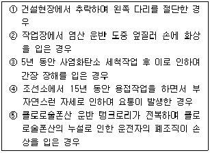
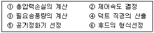
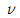
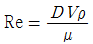
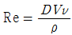
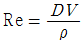
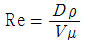
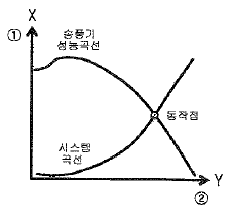

산업위생관리산업기사 (2009-05-10 기출문제)
1과목: 산업위생학 개론
1. 다음 중 유해물질과 생물학적 노출지표로 이용되는 대사 산물의 연결이 잘못된 것은?
- 벤젠 - 소변 중의 총페놀
- 크실렌 - 소변 중의 에틸마뇨산
- 트리클로로에틸렌 - 소변 중의 트리클로로초산
- 톨루엔 - 소변 중의 만델린산
(정답률: 49%)

2. 사무실 공기관리 지침에서 정하는 오염물질과 관리기준이 올바르게 연결된 것은?
- 이산화탄소(CO2) : 5000ppm 이하
- 일산화탄소 (CO) : 100ppm 이하
- 포름알데히드 : 0.1ppm 이하
- 오존 (O3) : 0.1ppm 이하
(정답률: 42%)
3. 기초대사량이 60kcal/h인 근로자가 시간당 300kcal가 소비되는 작업을 실시할 경우 작업대사율은 약 얼마인가? (단, 안정시 소비되는 에너지는 기초대사량의 1.5배이다.)
- 1.4
- 3.5
- 3.8
- 5.2
(정답률: 66%)
4. 다음 중 세계 최초로 보고된 “직업성 암”에 관한 내용으로 틀린 것은?
- 18세기 영국에서 보고되었다.
- 보고된 병명은 진폐증이다.
- Percival Pott에 의하여 규명되었다.
- 발병자는 어린이 굴뚝청소부로 원인물질은 '검댕(soot)'이었다.
(정답률: 82%)
5. 다음 중 보기에서 직업성 질환이라고 할 수 잇는 경우로만 나열한 것은?

- ①, ③
- ③, ④
- ②, ③, ④
- ①, ④, ⑤
(정답률: 84%)
6. 근육운동에 필요한 에너지를 생성하는 방법에는 혐기성 대사와 호기성 대사가 있다. 다음 중 현기성 대사의 에너지원이 아닌 것은?
- 아데노신삼인산
- 크레아틴인산
- 글리코겐
- 지방
(정답률: 73%)
7. 근로자의 약한 손의 힘이 평균 40kp라 할 때 이 근로자가 무게 16kg인 물체를 두 손으로 들어올릴 경우 작업강도(%MS)는 얼마인가?
- 5
- 16
- 20
- 40
(정답률: 50%)
8. 총분진의 노출기준에 있어 제2종분진의 노출기준(mg/m3)으로 옳은 것은?
- 1
- 2
- 5
- 10
(정답률: 60%)
9. 50명의 근로자가 작업하는 사업장에서 1년 동안 3건의 재해로 인하여 15일의 근로손실일수가 발생하였다면 이 사업장의 도수율은 얼마인가? (단, 근로자는 1일 8시간씩 연간 300일을 근무하였다.)
- 25
- 50
- 125
- 300
(정답률: 75%)
10. 다음 중 직업성 질환과 주된 물리적 원인의 연결이 옳은 것은
- 열사병 - 고열
- 잠함병 - 부적절한 조명
- 관절염 - 한랭환경
- CTDs- 소음
(정답률: 79%)
11. 다음 중 산업재해의 기본원인인 4M에 해당하지 않는 것은?
- Material
- Man
- Media
- Management
(정답률: 68%)
12. 다음 중 미국 정부산업위생전문가협의회(ACGIH)에서 제시한 허용농도 적용상의 주의사항으로 틀린 것은?
- 독성의 강도를 비교할 수 있는 지표이다.
- 대기오염 평가 및 관리에 적용할 수 없다.
- 반드시 산업위생전문가에 의하여 적용되어야 한다.
- 기존의 질병이나 육체적 조건을 판단하기 위한 척도로 사용할 수 없다.
(정답률: 60%)
13. 다음 중 직업성 질활을 유발하는 물리적 원인이 아닌 것은?
- 금속증기
- 이상기압
- 저온환경
- 전리방사선
(정답률: 31%)
14. 다음 중 사무실 공기관리 지침에 관한 설명으로 틀린 것은?
- 총부유세균은 연 1회 이상 측정한다.
- 시료채취는 사무실 면적이 1000m2를 초과하는 경우에는 500m2 당 1곳씩 추가하여 채취한다.
- 측정은 사무실 바다면으로부터 0.9 ~ 1.5m 높이에서 한다.
- 공기의 측정시료는 사무실 내에서 공기질이 가장 나쁠 것으로 예상되는 2곳 이상에서 채취한다.
(정답률: 33%)
15. 다음 중 산업안전보건법령상의 보건관리자의 자격에 해당 되지 않는 사람은?
- 산업위생지도사
- 산업위생관리산업기사 자격취득자
- 전문대학에서 산업위생 관련학과를 졸업한 자
- 전문대학에서 보건위생 관련학과를 졸업하고 산업보건위생에 관한 학과목을 9학점 이상 수료한 자
(정답률: 67%)
16. 다음 중 산업안전보건법령상 “강렬한 소음작업”에 해당하는 것은?
- 85dB 이상의 소음이 1일 8시간 이상 발생되는 작업
- 90dB 이상의 소음이 1일 6시간 이상 발생되는 작업
- 95dB 이상의 소음이 1일 4시간 이상 발생되는 작업
- 100dB 이상의 소음이 1일 1시간 이상 발생되는 작업
(정답률: 42%)
17. 육제적 작업능력(PWC)이 15kcal/min 인 근로자가 1일 8시간 동안 물체 운반작업을 하고 있다. 휴식시 대사량은 1.5kcal/min 이고, 작업대사량은 9kcal/min 일 때 시간당 휴식시간은 약 얼마인가? (단, Hertig 식을 적용한다.)
- 15분
- 18분
- 29분
- 32분
(정답률: 52%)
18. 다음 중 노출기준에 대한 설명으로 틀린 것은?
- 시간가중평균노출기준(TLV-TWA)은 거의 모든 근로자가 나쁜 영향을 받지 않고 노출될 수 있는 농도이다.
- 단시간노출기준(TLV-STEL)은 저농도에서 급성중독을 초래하는 유해물질에 적용된다.
- 최고노출기준(TLV-C)은 자극성 가스나 독작용이 빠른 물질에 적용된다.
- 단시간상한값(Excursion Limits)은 TLV-TWA가 설정되어 있는 유해물질 중에 독성 자료가 부족하여 TLV-STEL이 설정되어 있지 않은 물질에 적용될 수 있다.
(정답률: 49%)
19. 산업안전보건법령상 사업주는 근골격계 부담작업에 근로자를 종사하도록 하는 경우에는 몇 년마다 유해요인조사를 실시하여야 하는가?
- 1년
- 2년
- 3년
- 5년
(정답률: 60%)
20. 근무 교대제를 운영함에 있어서 고려되어야 할 사랑으로 가장 적절한 것은?
- 야간근무의 연속은 최소 4~5일로 한다.
- 일반적으로 오전 근무의 개시시간은 오전 11시에 한다.
- 야간근무 종료 후 다음 야간근무 시작할 때까지의 간격은 8시간으로 한다.
- 3교대제일 경우 최소 4개조로 편성한다.
(정답률: 74%)
2과목: 작업환경측정 및 평가
21. 다음은 노출기준을 설정하기 위한 이론적 배경을 설명한 것이다. 가장 거리가 먼 것은?
- 사업장 역학조사 등으로 얻은 자료를 근거로 설정한다.
- 동물 실험을 한 결과를 근거로 설정한다.
- 화학 구조상의 유사성과 연계하여 설정한다.
- 물리적 안정성을 평가하여 설정한다.
(정답률: 42%)
22. 다음 중 작업환경측정에서 사용하는 2차 유량측정장치(2차 표준)에 해당 되지 않는 것은?
- 로타 미터(Rota meter)
- 오리피스 미터(Orifice meter)
- 폐활량계 미터(Spiro meter)
- 습식테스트 미터(Wet-test meter)
(정답률: 79%)
23. 다음 중 옥외(태양관선이 내리쬐지 않는 장소)에서 습구흑구온도지수(WBGT)의 산출방법은? (단, NWB : 자연습구온도, DT : 건구온도, GT : 흑구온도)(오류 신고가 접수된 문제입니다. 반드시 정답과 해설을 확인하시기 바랍니다.)
- WBGT = 0.7NWB +0.3GT
- WBGT = 0.7NWB +0.3DT
- WBGT = 0.7NWB +0.2DT +0.1GT
- WBGT = 0.7NWB +0.2GT +0.1DT
(정답률: 74%)
24. 산에 쉽게 용해되므로 입자상 물질 중의 금속을 채취하여 원자 흡광법으로 분석하는데 적당하며 유리섬유, 석면 등 현미경분석을 위한 시료채취에도 이용되는 막여과지는?
- Glass fiber membrane filter
- Poly vinylchloride membrane filter
- Mixed cellulose ester membrane filter
- Trillon membrane filter
(정답률: 70%)
25. 어떤 물질에 대한 분석방법의 정량한계는 10㎍ 이다. 0.1 ㎎/m3의 농도를 검출하기 위해서는 공기량을 최소 얼마나 채취하여야 할까?
- 1L
- 10L
- 100L
- 1000L
(정답률: 52%)
26. 목재가공공정에서 분진을 측정하였다. 총 시료채취유량이 120L 일 때 분진의 농도(㎎/m3)는? (단, 여과지의 무게 : 측정전 – 0.01167g, 측정후 – 0.01217g, 공시료의 무게 : 측정전 – 0.01202g, 측정후 - 0.01208g)
- 2.54
- 3.67
- 4.17
- 5.34
(정답률: 38%)
27. 일정한 물질에 대해 분석치가 참값에 얼마나 접근하였는가 하는 수치상의 표현은?
- 정확도
- 분석도
- 정밀도
- 대표도
(정답률: 68%)
28. 싸이클론 분립장치가 관성충돌형 분립장치보다 유리한 장점이 아닌 것은?
- 매체의 코팅과 같은 별도의 특별한 처리가 필요없다.
- 호흡성 먼지에 대한 자료를 쉽게 얻을 수 있다.
- 시료의 되튐 현상으로 인한 손실염려가 없다.
- 입자의 질량크기별 분포를 얻을 수 있다.
(정답률: 64%)
29. 0℃ 1atm에서 H2 10L 는 273℃, 380mmHg상태에서 몇 L 인가?
- 40L
- 50L
- 60L
- 70L
(정답률: 39%)
30. 0.01%(v/v)은 몇 ppm인가?
- 1
- 10
- 100
- 1000
(정답률: 77%)
31. 불꽃방식의 원자습광광도계의 일반적인 장단점으로 틀린 것은?
- 가격이 흑연로장치에 비하여 저렴하다.
- 분석시간이 흑연로장치에 비하여 적게 소요된다.
- 시료랑이 적게 소요되며 강도가 높다.
- 고체시료의 경우 전처리에 의하여 매트릭스를 제거하여야 한다.
(정답률: 42%)
32. 소리의 음압수준이 87dB인 기계 5 대가 동시에 가동하면 전체 음압수존은?
- 약 94dB
- 약 96dB
- 약 98dB
- 약 99dB
(정답률: 40%)
33. 직독식기구인 검지관의 사용 시 장점이다. 틀린 것은?
- 복잡한 본석이 필요 없고 사용이 간편하다.
- 빠른 시간에 측정결과를 알 수 있다.
- 물질의 특이도(Specificity)가 높다.
- 맨홀, 밀폐공간에서 유용하게 사용될 수 있다.
(정답률: 74%)
34. 작업장 공기 중 사염화탄소 (TLV=10ppm)가 7ppm, 1,2-디클로로에탄(TLV = 50ppm)이 5ppm, 1,2- 디브로메탄(TLV=20ppm)이 9ppm일 때 노출지수는? (단, 상가작용 기준)
- 1.⑤
- 1.15
- 1.25
- 1.35
(정답률: 64%)
35. 활성탄관에 흡착된 비극성물질의 탈착용매로 쓰이는 화학물질은?
- 에탄올
- 이황화탄소
- 헥산
- 클로로포름
(정답률: 67%)
36. 개인시료채취라 함은 근로자의 호흡기 위치에서 채취하는 것을 말한다. 근로자 호흡기 위치로 가장 적절한 것은? (단, 노동부 고시 기준)
- 근로자 호흡기를 중심으로 반경 30㎝인 반구
- 근로자 호흡기를 중심으로 반경 50㎝인 반구
- 근로자 호흡기를 중심으로 반경 60㎝인 반구
- 근로자 호흡기를 중심으로 반경 90㎝인 반구
(정답률: 68%)
37. 가스크로마토그래피에서 컬럼(Column)의 역할은?
- 전개가스의 예열
- 가스전개와 시료의 혼합
- 용매탈착과 시료의 혼합
- 시료성분의 분배와 분리
(정답률: 46%)
38. 순수한 물 1.0L의 mole 수는?
- 35.6 moles
- 45.6 moles
- 55.6 moles
- 65.6 moles
(정답률: 60%)
39. 다음 중 실리카겔에 대한 친화력이 가장 큰 물질은?
- 방향족 탄화수소류
- 알데하이드류
- 올레필류
- 에스테르류
(정답률: 70%)
40. 0.2N - K2Cr2O7 ( 분자량 294.18 ) 500ml을 만들 때 K2Cr2O7 의 필요량은?
- 2.1g
- 4.9g
- 6.3g
- 8.2g
(정답률: 32%)
3과목: 작업환경관리
41. 방진 마스크에 관한 설명으로 틀린 것은?
- 방진마스크의 종류에는 격리식과 직결식, 면체여과식이 있으며 형태별로는 전면, 반면 마스크가 있다.
- 대상입자에 맞는 필터 재질(비휘발성용, 휘발성용)을 사용한다.
- 흡기, 배기 저항은 낮은 것이 좋으며 흡기저항 상승률도 낮은 것이 좋다.
- 여과제의 탈착이 가능하여야 한다.
(정답률: 44%)
42. 산소농도가 6~10%인 산소결핍 작업장에서의 증상 기준으로 가장 알맞은 것은?
- 계산착오, 두통, 매스꺼움
- 의식 상실, 안면 창백, 전신 근육경련
- 귀울림, 맥박수 증가, 호흡수 증가
- 정신집중력 저하. 체온상승, 판단력 저하
(정답률: 50%)
43. 다음 중 진동방지 대책으로 가장 관계가 먼 것은?
- 완충물의 사용
- 공진점 진동수의 일치
- 진동원의 제거
- 진동의 전파경로 차단
(정답률: 68%)
44. 고압 환경에서 작업하는 사람에게 마취 작용(다행증)을 일으키는 가스는?
- 이산화탄소
- 수소
- 질소
- 헬륨
(정답률: 77%)
45. 고압환경에서의 질소마취는 몇 기압 이상의 작업환경에서 발생하는가?
- 1기압
- 2기압
- 3기압
- 4기압
(정답률: 63%)
46. VDT 작업자의 스트레스성 요인에 의한 자각증상으로 틀린 것은?
- 심박수 증가
- 혈압상승
- 소화불량
- 아드레날린 분비 감소
(정답률: 52%)
47. 전자기 방사선(Electromagnetic Radiation)에 속하는 것은?
- 중성자
- UV선
- X선
- IR 선
(정답률: 74%)
48. 방사선량 중 흡수선량에 관한 설명과 가장 거리가 먼 것은?
- 공기가 방사선에 의해 이온화되는 것에 기초를 둠
- 모든 종류의 이온화 방사선에 의한 외부노출, 내부노출 등 모든 경우에 적용 함
- 관용단위는 rad(피조사체 1g에 대하여 100erg의 에너지가 흡수되는 것)임
- 조직(또는 물질)의 단위 질량 당 흡수된 에너지 임
(정답률: 25%)
49. 작업에 기인하여 전신진동을 받을 수 있는 작업자로 가장 올바른 것은?
- 병타 작업자
- 착압 작업자
- 함머 작업자
- 교통기관 승무원
(정답률: 56%)
50. 소음의 방향성은 소음원과 작업장 공간의 특성에 따라 결정된다. 다음 중 소음의 방향(Q) 4를 설명한 것은? (단, Q : 지향계수)
- 소음원이 큰 작업장 한가운데 바닥에 놓여 있을 때
- 소음원이 작업장 벽 근처의 바닥에 있을 때
- 소음원이 작업장의 모퉁이에 놓여 있을 때
- 소음원이 자유공간의 중심에 놓여 있을 때
(정답률: 47%)
51. 100톤의 프레스 공정에서 측정한 8시간 음압수준이 93dB이었다. 근로자가 귀마개 (NRR=10)를 착용하고 있을 때 근로자가 노출되는 음압 수준은 얼마이며, 소음 노출기준 초과 여부 판정은? (단, 소음 노출 기준은 90dB로 가정)
- 91.5dB, 노출기준 초과
- 90.5dB, 노출기준 초과
- 83.0dB, 노출기준 미만
- 88.0dB, 노출기준 미만
(정답률: 47%)
52. 채광을 위한 창의 면적은 바닥면적의 몇 %가 이상적인가?
- 10 ~ 15%
- 15 ~ 20%
- 20 ~ 25%
- 25 ~ 30%
(정답률: 63%)
53. '조도'에 관한 설명으로 틀린 것은?
- 단위 평면적에서 발산 또는 반사되는 광량 즉 눈으로 느끼는 광원 또는 반사체의 밝기를 말한다.
- 단위로는 룩스(Lux)를 사용한다.
- 1 Foot candle = 10.8 Lux 이다.
- 조도는 광원으로부터의 거리에 따라 달라진다.
(정답률: 31%)
54. 가로 15m, 세로 25m, 높이 3m인 어느 작업장에 음의 잔향시간을 측정해보니 0.238sec였다. 이 작업장의 총흡음력(sound absorption)을 30% 증가시키면 잔향시간은 몇 sec가 되겠는가?
- 0.217
- 0.196
- 0.183
- 0.157
(정답률: 39%)
55. 자외선에 관한 설명으로 틀린 것은?
- 피부암(280~320nm)을 유발한다.
- 구름이나 눈에 반사되며 대기오염의 지표이다.
- 일명 화학선이라 하며 광화학반응의 인자로 작용한다.
- 눈에 대한 영향은 320nm에서 가장 크다.
(정답률: 42%)
56. 적용화학물질은 밀랍, 탈수라노린, 파라핀, 유동파라핀, 탄산 마그네슘이며 광산류, 유기산, 염류 및 무기염류 취급작업에 주로 사용하는 보호크림은?
- 친수성 크림
- 소수성 크림
- 차광 크림
- 피막형 크림
(정답률: 44%)
57. 귀덥개와 비교하여 귀마개에 대한 설명으로 틀린 것은?
- 부피가 작아서 휴대하기가 편리하다.
- 좁은 장소에서 머리를 많이 움직이는 작업을 할 때 사용하기 편리하다.
- 제대로 착용하는데 시간이 적게 소요되며 용이하다.
- 일반적으로 차음효과는 떨어진다.
(정답률: 60%)
58. 각각 87dB(A)의 음압수준을 발생하는 소음원이 2개 있다. 2개의 소음원이 동시에 가동될 때 발생하는 음압수준은?
- 89dB(A)
- 90dB(A)
- 91dB(A)
- 92dB(A)
(정답률: 50%)
59. 고열 장해인 열경련에 관한 설명으로 틀린 것은?
- 일반적으로 더운 환경에서 고된 육체적 작업을 하면서 땀으로 흘린 염분 손실을 충당하지 못할 때 발생한다.
- 염분을 공급할 때는 식염정제를 사용하여 빠른 공급이 될수 있도록 하여야 한다.
- 열경련 환자는 혈중 염분의 농도가 낮기 때문에 염분관리가 중요하다.
- 통증을 수반하는 경련은 주로 작업시 사용한 근육에서 흔히 발생한다.
(정답률: 64%)
60. 진동으로 손가락의 말초혈관운동 장해 때문에 손가락이 창백하여지고 동통을 느끼는 현상은?
- Silicosis 현상
- Crowd poison 현상
- Caison disease 현상
- Raynaud's 현상
(정답률: 81%)
4과목: 산업환기
61. 다음 중 사이클론에서 절단입경(cut-size,Dpc)의 의미로 옳은 것은?
- 95% 이상의 처리효율로 제거되는 입자의 입경
- 75% 의 처리효율로 제거되는 입자의 입경
- 50% 의 처리효율로 제거되는 입자의 입경
- 25% 의 처리효율로 제거되는 입자의 입경
(정답률: 46%)
62. 다음 보기를 이용하여 일반적인 국소배기장치의 설계 순서를 가장 적절하게 나열한 것은?

- ⑥→②→③→④→⑤→①
- ②→③→①→④→⑤→⑥
- ③→②→④→①→⑥→⑤
- ⑥→③→②→①→④→⑤
(정답률: 54%)
63. 다음 중 레이놀즈수(Re. Reynold's number)를 나타낸 식으로 옳은 것은? (단, V는 평균 유속, D 는 관의 직경, ρ 는 공기의 밀도, μ 는 유체의 점성계수,

는 유체의 동점성계수)



(정답률: 57%)
64. 근로자가 유해물질에 노출되지 않도록 유해물질을 포집하여 배출할 수 있도록 국소배기장치를 설치하고자 할 때 유의해야 할 사항으로 가장 거리가 먼 것은?
- 발산원 가까운 곳에 적합한 형태와 적정한 크기의 후드를 설치한다.
- 후드는 작업자가 흡인되는 오염기류 내에 노출되지 않도록 한다.
- 후드, 덕트는 최대한 공기저항이 적게 설계되고, 자연적으로 분진이 퇴적되지 않도록 한다.
- 발산원의 오염물질을 흡인하기 위해 제어풍속을 최대한으로 높인다.
(정답률: 72%)
65. 자유공간에 떠 있는 직경 20cm 인 원형개구 후드의 개구면으로부터 20cm떨어진 곳의 입자를 흡인하려고 한다. 제어풍속을 0.8m/s로 할 때 덕트에서의 속도는 약 얼마인가?
- 7m/s
- 11m/s
- 15m/s
- 18m/s
(정답률: 46%)
66. 다음 중 송풍기의 상사법칙에 대한 설명으로 틀린 것은?
- 송풍량은 송풍기의 회전속도에 정비례한다.
- 송풍기 풍압은 송풍기 회전날개의 직경에 정비례한다.
- 송풍기 동력은 송풍기 회전속도의 세제곱에 비례한다.
- 송풍기 풍압은 송풍기 회전속도의 제곱에 비례한다.
(정답률: 64%)
67. 다음 중 압력에 관한 설명으로 잘못된 것은?
- 정압이 대기압보다 크면 (+)압력이다.
- 정압이 대기압보다 작은 경우도 있다.
- 정압은 속도압과 관계없이 독립적으로 발생한다,
- 속도압은 공기흐름으로 인하여 (-)압력이 발생한다.
(정답률: 62%)
68. 총압력손실 계산방법 중 정압조절평형법의 장점이 아닌 것은?
- 향후 변경이나 확장에 대해 유연성이 크다.
- 설계가 확실할 때는 가장 효율적인 시설이 된다.
- 설계시 잘못 설계된 분지관을 쉽게 발견할 수 있다.
- 예기치 않는 침식 및 부식이나 퇴적문제가 일어나지 않는다.
(정답률: 39%)
69. 다음 중 덕트의 설치를 결정할 때 유의사항으로 가장 적절하지 않은 것은?
- 가급적 원형 덕트를 사용한다.
- 곡관의 수를 적게 한다.
- 청소구를 설피한다.
- 곡관의 곡률반경을 작게 한다.
(정답률: 77%)
70. 다음 중 전체환기의 적용조건으로 가장 거리가 먼 것은?
- 오염물질의 독성이 비교적 낮은 경우
- 오염물질의 발생량이 적은 경우
- 오염물질이 시간에 따라 균일하게 발생하는 경우
- 동일작업장소에 배출원이 한 곳에 집중되어 있는 경우
(정답률: 75%)
71. 다음 중 후드의 개방면에서 측정한 속도로서 면속도가 제어속도가 되는 형태의 후드는?
- 포위형 후드
- 포집형 후드
- 푸쉬-풀형 후드
- 캐노피형 후드
(정답률: 53%)
72. 덕트의 곡관은 압력손실을 줄이기 위하여 새우등 곡관을 사용한다. 덕트의 직경이 20cm일 경우 새우등(이음매)은 몇 개 이상으로 하는 것이 적절한가?
- 2개
- 3개
- 4개
- 5개
(정답률: 47%)
73. 슬롯후드란 개구변의 폭(W)이 좁고, 길이(L)가 긴 것을 말하며 일반적으로 W/L 비가 몇 이하인 것을 말하는가?
- 0.1
- 0.2
- 0.3
- 0.4
(정답률: 47%)
74. 그림은 송풍기 성능곡선과 시스켐곡선이 만나는 송풍기 동작점을 나태낸 것이다. ①과 ②에 들어갈 용어로 옳은 것은?

- ① 송풍기 동압, ② 덕트유속
- ① 덕트 유속, ② 송풍기 동압
- ① 송풍기 정압, ② 송풍량
- ① 송풍기 정압, ② 송풍기 동압
(정답률: 66%)
75. 다음 중 산업환기에서 의미하는 '표준공기'에 대한 설명으로 옳은 것은?
- 표준공기는 0℃, 1기압(760mmHg)인 상태이다.
- 표준공기는 21℃, 1기압(760mmHg)인 상태이다.
- 표준공기는 25℃, 1기압(760mmHg)인 상태이다.
- 표준공기는 32℃, 1기압(760mmHg)인 상태이다.
(정답률: 69%)
76. 다음 중 유해물질을 함유한 배기가스를 유입시켜 내부에서 회전시키고 그 원심력에 의하여 유해물질을 제거시키는 방식의 제진장치는?
- 관성력집진장치
- 사이클론집진장치
- 여과집진장치
- 벤츄리스크러버
(정답률: 52%)
77. 작업장 내의 열부하량이 10000kcal/h 이고, 온도가 35℃였다. 외기의 온도가 20℃ 라면 필요환기량(m3/h)은 약 얼마인가?
- 925
- 1667
- 2222
- 6500
(정답률: 27%)
78. 국소배기장치에서 후드의 유입계수는 0.7, 후드의 압력 손실은 8.0mmH2O일 때 후드의 속도압(mmH2O)은 약 얼마인가?
- 6.7
- 7.7
- 8.7
- 9.7
(정답률: 43%)
79. 사염화에틸렌 5000ppm 이 공기중에 존재한다면 공기와 사염화에틸렌 혼합물의 유효비중(effect specific gravity)은 얼마인가? (단, 사염화에틸렌의 증기비중은 5.7이다.)
- 1.0235
- 1.0470
- 1.1740
- 1.4075
(정답률: 50%)
80. 다음 중 중력집진장치의 입자분리속도(침강속도)에 관한 설명으로 틀린 것은? (단, 등속침강상태이며, 스토크스의 법칙이 적용된다.)
- 중력가속도에 비례한다.
- 입자직경의 제곱에 비례한다.
- 입자와 가스의 밀도차에 반비례한다.
- 가스의 점성도에 반비례한다.
(정답률: 19%)